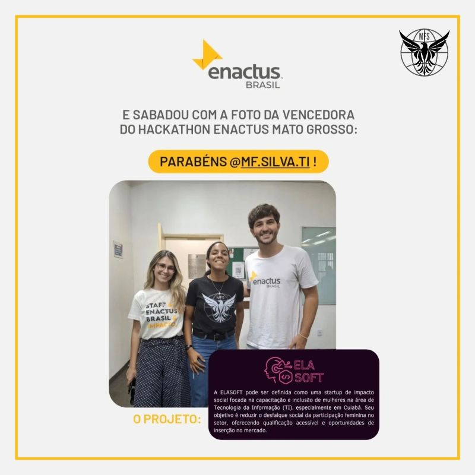
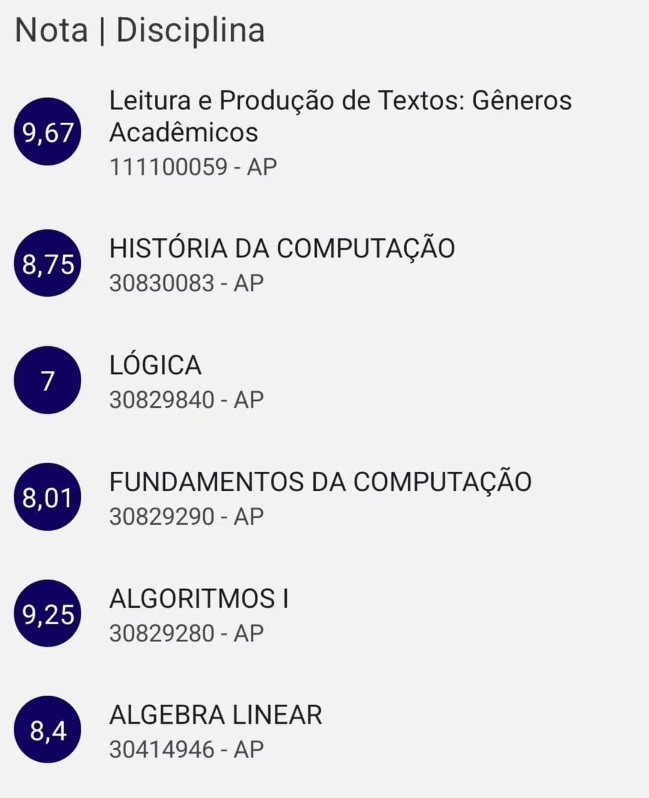
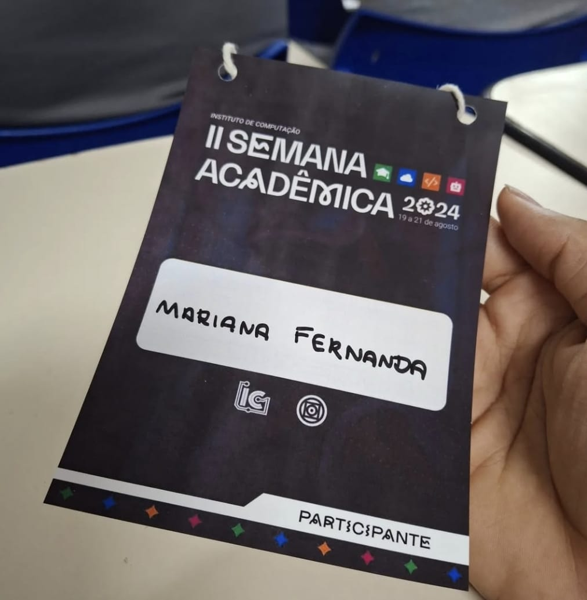
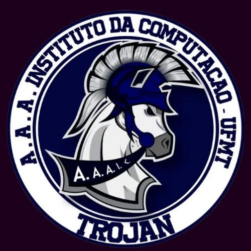

Premiação Enactus
Enactus Award

Em 2025, participei e venci um Hackathon promovido pela Enactus Brasil na UFMT com o projeto ELASOFT, uma startup de impacto social focada na capacitação e inclusão de mulheres na área de Tecnologia da Informação (TI) em Cuiabá. A experiência foi transformadora, permitindo-me desenvolver soluções inovadoras para reduzir o desfalque social no setor.
In 2025, I participated in and won a Hackathon organized by Enactus Brasil at UFMT with the ELASOFT project, a social impact startup focused on training and including women in the Information Technology (IT) field in Cuiabá. The experience was transformative, allowing me to develop innovative solutions to reduce the gender gap in the sector.
Conheça meu projeto vencedor Ver certificado de participaçãoMinhas Notas do Primeiro Semestre
My First Semester Grades

Meu desempenho acadêmico no primeiro semestre foi muito bom, com uma média de 8.51 e notas bem distribuídas. A maior nota (9.67) foi em Leitura e Produção de Textos, enquanto a menor (7.00) foi em Lógica, o que pode indicar um desafio maior nessa disciplina. O desvio padrão de 0.87 mostra que minhas notas foram relativamente consistentes, sem grandes variações. No geral, os resultados refletem um bom aproveitamento, com espaço para aprimoramento em algumas áreas específicas.
My academic performance in the first semester was very good, with an average of 8.51 and well-distributed grades. The highest grade (9.67) was in Reading and Academic Writing, while the lowest (7.00) was in Logic, which might indicate a greater challenge in that subject. The standard deviation of 0.87 shows that my grades were relatively consistent, with no major variations. Overall, the results reflect strong performance, with room for improvement in specific areas.
Semana Acadêmica | 2024
Academic Week | 2024

Participei da II Semana Acadêmica do Instituto de Computação, realizada entre 19 e 21 de agosto de 2024. Durante o evento, tive a oportunidade de acompanhar palestras inspiradoras, participar de workshops práticos e interagir com profissionais, pesquisadores e colegas da área.
I participated in the II Academic Week of the Institute of Computing, held from August 19 to 21, 2024. During the event, I had the opportunity to attend inspiring lectures, engage in hands-on workshops, and connect with professionals, researchers, and peers in the field.
Ver certificado de participaçãoAtlética TROJAN
TROJAN Athletic

O Cavalo de Troia é o símbolo da Atlética de Sistemas de Informação da UFMT, e eu me identifico com essa escolha. Ele representa estratégia, inteligência e inovação, características essenciais tanto na mitologia quanto na área da tecnologia. Além do significado histórico, o conceito de Trojan também está presente na cibersegurança, fazendo referência a ataques disfarçados que exploram vulnerabilidades. Para mim, esse símbolo reflete a criatividade, a capacidade de adaptação e o espírito de superação dos estudantes de tecnologia.
The Trojan Horse is the symbol of the Information Systems Athletic Association at UFMT, and I identify with this choice. It represents strategy, intelligence, and innovation, qualities that are essential both in mythology and in the field of technology. Beyond its historical meaning, the Trojan concept is also present in cybersecurity, referring to disguised attacks that exploit vulnerabilities. To me, this symbol reflects the creativity, adaptability, and resilience of technology students.